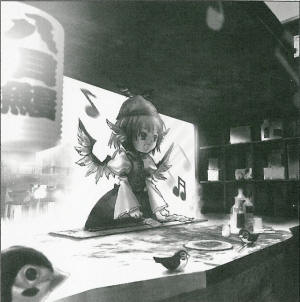

Night Sparrow's New Promising Enterprise
>Recommending grilled lamprey instead of grilled chickenRecently, a night sparrow has started a promising new business.
That business is not a grilled chicken stand, but rather, a grilled lamprey stand.
One day a red-lantern stand suddenly appeared on a road that few people travel at night.
When someone lured by the inviting red lights and passes through the shop's curtain, they'll find a grilled lamprey stand instead of a grilled chicken stand.
This peculiar ingredient is becoming a topic within the curious circles of Gensokyo.
The one who runs this stand is Ms. Mystia Lorelei (Night Sparrow).
To put an end to red-lantern grilled chicken stands, Ms. Mystia started her shop.
Since long ago, it was said that lamprey was good for night-blindness, and it was found to be very useful.
On the other hand, it's said that people who walk this road at become night-blind.
For that reason, many of the people who take the road and become nightblind rush into the shop, and others come in to prevent such a thing from happening in the first place. Such customers are frequent.
Ms. Mystia said,
Night stands that specialize in grilled chicken are strange, aren't they.
I think there are other foods that are twice as delicious.
That 'twice' also goes for sales.
So, I was thinking, it's said that many customers around here become night-blind, but I'm the one that causes night-blindness in humans.
If that's the case, I thought that maybe lamprey would be pretty popular.
Making humans night-blind makes it hard for them to walk around, but in that night-blindness they'll see the red light from the laterns.
They'll helplessly come in and see that there's lamprey, great for night-blindness. Don't you think this is ingenious?
As extra service, you can listen to the shopkeeper sing.
One cannot fully appreciate this song unless they're deep in sake. If anyone listens to this wonderful song then, they won't be able to go back home.
Also, this extra service cannot be refused. Grilled lamprey over grilled chicken.
It may become a popular menu item from now on.
I tried this and I found it was tasty. It's very good.
AD: Feel free to contact nearby sparrows or Bunbunmaru Shinbun for inquiries about the night stand.
Mystia
Night bird, night song~ Human shall turn off the light in the darkness~
Aya
Sorry for interrupting you, but I brought you the article I wrote.
Mystia
Um? Ah, please leave it behind. Dream in the night, red in the night~
Aya
You aren't interested...
Mystia
Humans will be crucified in the darkness~ Hey, don't interrupt me while singing.
Aya
You're the first one who has had no interest in an article about yourself...
Mystia
I have more fun singing.
Aya
Those are some odd lyrics. Well, I really don't mind. I agree with you in disliking grilled chicken.
Mystia
You're smart. Though we have plenty of foods to eat, they serve only grilled chicken at every stand. Why do they do so?
Aya
Anyway, Does lamprey really have an effect on night-blindness?
Mystia
Of course, because it has eight eyes.
Aya
Lamprey has only two eyes; the eye-like patterns are the gills. Also, there are 14 patterns.
Mystia
Eh? But it's effective, so there's no problem.
Aya
Well, you're right.
Mystia
Plus, if it doesn't work, I just release them from the night-blindness and pretend it did. That works great!
Aya
Eh? You mean you cheat your customer and make a profit on lampreys?
Mystia
Night bird, night song~
Aya
I've had enough of your singing.
Mystia
Isn't it good to cure night-blindness? Or do you want us to be eaten too?
Aya
Are you really a night sparrow?
Mystia
Humans light up the darkness~
Aya
I've had enough.
Mystia
...But, I've had a hard time getting lampreys recently, so I'm a little worried.
Aya
It's already out of season. Some impatient beings are getting ready to hibernate.
Mystia
That's why I serve not only lampreys, but eels and loaches.
Aya
You don't hesitate to cheat.
Mystia
But it's effective, so there's no problem. Is that clear? Here, this is skewered grilled lamprey.
Aya
OK, OK. I don't care whether it's a fake lamprey or something... Wait! This paper below this dish is my newspaper! I specially brought it for you~.
Mystia
Newspapers absorb oil very well. It's convenient.
Aya
Aren't you even interested in your own article? I rarely see anyone that isn't.
Mystia
I can hardly see those tiny characters.
Aya
Could it be that you can't read any characters at all?
Mystia
I-it's not that bad. I mean, it's better to sing a song than wasting time by reading a newspaper.
Aya
You should read more, otherwise you'll become more and more of a birdbrain.